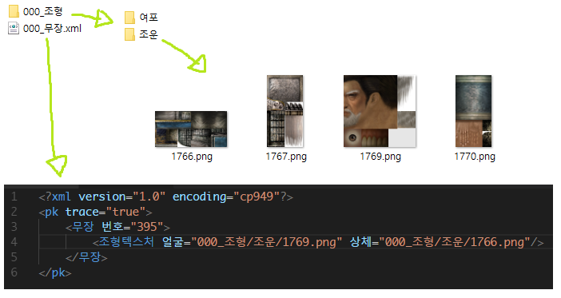

data 폴더
- data 폴더의 모든 xml 파일을 로드하며 파일 이름이 '#'으로 시작한다면 로드하지 않습니다.
- xml 파일 이름은 구분하지 않으며 루트 노드의 이름은 항상 'pk'입니다.
- 중복된 값은 나중에 로드된 xml 파일의 값이 적용됩니다.
- xml 파일의 데이터는 scenario.s11 파일이 로드된 후 해당 데이터를 덮어쓰는 방식입니다.
- 이미지, 사운드 파일을 입력할 때 경로는 xml 파일 경로를 기준으로 설정하시면 됩니다.
- 자신의 조형이나 음성을 만들어 배포할 때는 아래와 같이 만들어서 배포하시면 됩니다. 자료를 받는 사람은 따로 추가 작업 없이 data 폴더에 넣기만 하면 됩니다. xml 파일을 배포할때는 가능한 중복되는 데이터가 최소화 되도록 만들어주시기 바랍니다.(조형을 배포하는데 부가무력같은 값을 설정하지 않도록)

media 폴더
- san11pkres.bin 파일 중 이름이 알려진 파일들을 덮어쓰기 위한 폴더입니다.
script 폴더
- script 폴더의 모든 cpp 파일을 로드하며 파일 이름이 '#'으로 시작한다면 로드하지 않습니다.